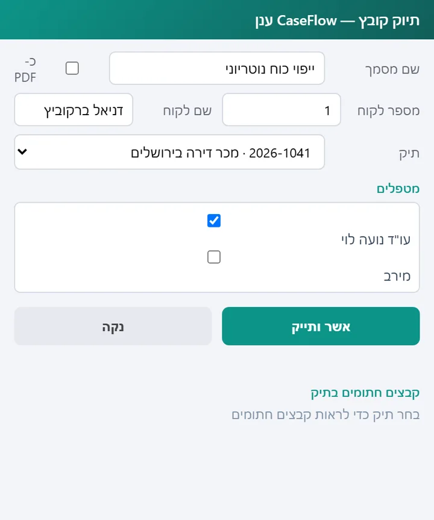
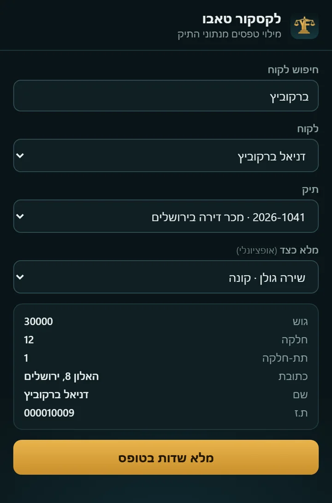

תוספים
שני מקומות שבהם עורך דין מבלה הרבה זמן הם Word ואתרי הממשלה. לשניהם יש תוסף.
תוסף Word
כשהמסמך מוכן, פותחים את החלונית בצד של Word, מחפשים לקוח, בוחרים תיק ומסמנים מטפלים. המסמך נכנס לתיק כ-Word או כ-PDF, בלי לשמור קובץ ולהעלות אותו.
התחברות עם הקוד האישי של המשתמש, כמו במערכת עצמה.


תוסף Chrome
פותחים את הטופס הממשלתי בדפדפן, בוחרים בתוסף את הלקוח, התיק והצד לעסקה, ולוחצים למילוי. התוסף מכניס גוש, חלקה, שמות ומספרי זהות מהתיק.
הוא עובד על טפסי מקרקעין ברשת ועל ההצהרה המקוונת של רשות המסים (טופס 7000). בסוף בודקים ומגישים בעצמכם; התוסף לא שולח כלום.
אתרי הממשלה משתנים מדי פעם, ואז גם התוסף מתעדכן.


רוצים לראות את זה על תיק שלכם?
הדגמה של כ-20 דקות, בלי התחייבות. נעבור על עסקה מהסוג שאתם מטפלים בו.